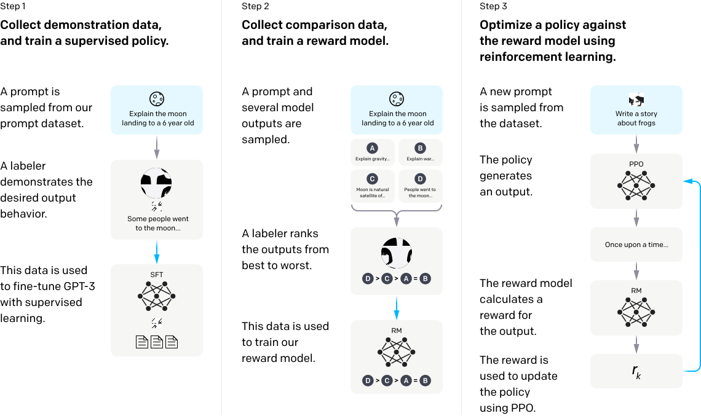

GPT
Last week we described some elements of a transformer architecture.
Most famous engine developped by OpenAI: Generative Pre-trained Transformer (aka GPT)
- GPT1 (1018)
- 0.1 billion parameters
- had to be fine-tuned to a particular problem
- transfer learning (few shots learning)
- GPT2:
- multitask
- no mandatory fine tuning
- GPT3:
- bigger: 175 billions parameters
- GPT4:
- even bigger: 1000 billions parameters ???
- on your harddrive: 1Tb
Corpus
GPT-3 was trained1 on
⇒ 45 TB of data
- cured into a smaller datasets
⇒ size ???
Dataset (mostly) ends in 2021.
How is the model trained?
Several concepts are relevant here:
unsupervised learning
- autoencoding
- ⇒ build a representation of the text
fine tuning
reinforcement learning
What is learning?
A machine can perform a task \(f(x; \theta)\) for some input \(x\) in a data-generating process \(\mathcal{X}\) and and some parameters \(\theta\).
A typical learning task consists in optimizing a loss function (aka theoretical risk): \[\min _{\theta} \mathcal{L}(\theta) = \mathbb{E}_{\theta} f(x; \theta)\]
The central learning method to minimize the objective is called stochastic gradient descent.
Learning Set
In practice one has access to a dataset \((x_n) \subset \mathcal{X}\) and minimizes the “empirical” risk function
\[L\left( (x_n)_{n=1:N}, \theta \right) = \frac{1}{N} \sum_{n=1}^N f(x; \theta)\]
Regular case: in usual cases, we assume that the dataset is generated by the true model (data-generating process)
Two important variants:
- transfer learning:
- goal is to use the model \(\mathcal{X}\) but the training dataset is generated from another data-generating process \(\mathcal{Y}\)
- \(\mathcal{Y}\) can be a subset of \(\mathcal{X}\) or (partially) disjoint
- do you need some data from \(\mathcal{Y}\) (few shots learning) or non at all (zero-shot learning)
- reinforcement learning
- the learning algorithm can generate some data to improve learning
Transfer learning
- GPT is inherently a transfer learning machine
- earlier versions (GPT-1, GPT-2) needed some examples before being able to perform any given task:
- fine-tuning: retrain some coefficients of the wole NN
- new versions (>GPT-3) can perform zero-shot tasks just by text completion
- fine-tuning can be emulated by prompting
- there is still a fine-tuning API
Reinforcement Learning
A reinforcement learning algorithm can take actions which have two effects:
- provide some reward to the algorithm
- generate (more) data to improve the quality of future actions
Example:
Reinforcement Learning for GPT-4
The GPT-4 model has been fine-tuned with reinforcement learning. The language model was rewarded for providing the right kind of answer:
- the feedback came from kenyan workers (sic!)
Two main variants on top of foundation model GPT Base:1
instructGPT
- alignment, non-toxicity, …
- factual correctness
chatGPT
- follow a conversation
- organization of answer
- not just a context on top of GPT
There is information about how GPT-3 was trained (check technical paper or summary)

The different variants of GPT
Which of the following model should you use?
Lots of options:
text-curie-001text-davinci-003text-babbage-001text-ada-001- …
What are the differences between the various engines?
- architecture / model size
- training set of foundation model (GPT Base)
- type of fine-tuning (instruct/chat/code)
It is not clear whether GPT Base will still be accessible in the future or whether it will be fine-tuned for alignement or not.